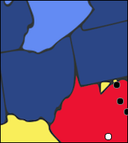
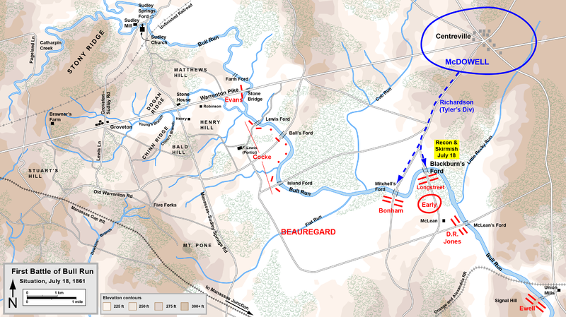
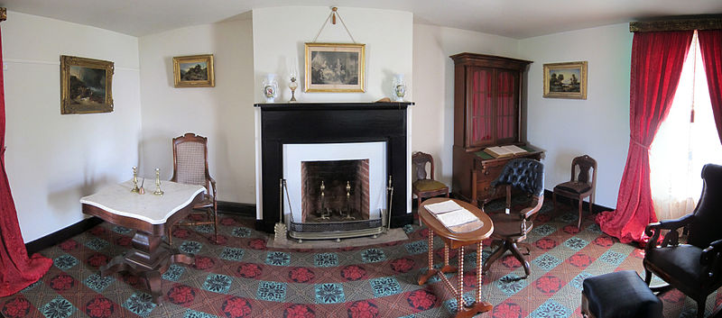

The Battle of Winchester
| Union | May 25, 1862 | Confederate |
|---|---|---|
| Nathaniel P. Banks | Commanders | Stonewall Jackson |
| 6,500 | Strength | 16,000 |
| 2,019 | Casualties and Losses | 400 |
On May 24th, 1862, Banks learned that the Confederate forces had captured the garrison at Front Royal. He ordered his forces to retreat, but they were attacked in Middletown and again in Newtown. Banks deployed three brigades (two infantry, one cavalry) to slow down the Confederates still following the main group. The Confederate soldiers advanced and the brigades were forced to retreat back to the town of Winchester, which the others were preparing to defend.
On May 25, Richard S. Ewell and his troops attacked from the front, Camp Hill, while Jackson and his troops came from the side, Bowers Hill. Overwhelmed, many Union soldiers fled into the town. Banks led his troops in retreat to the North, first to Martinsburg and then to Williamsport. The Confederates followed, at a slow pace, but still quick enough to capture many Union soldiers.
This was a major victory in Jackson's Valley Campaign.

The Battle of Bull Run
| Union | July 21, 1861 | Confederate |
|---|---|---|
| Irvin McDowell Robert Patterson | Commanders | P. G. T. Beauregard Joseph E. Johnston |
| 28-35,000 | Strength | 32-34,000 |
| 2,896 | Casualties and Losses | 1,982 |
McDowell was appointed the commander of the army of Northeast Virginia by President Lincoln. He was under a lot of pressure to quickly defeat the Confederates in Virginia. On July 16, 1861, McDowell left Washington and began to move westward, hoping to intersect the Confederate army at Bull Run. His plan was to attack from the front with two groups, while a third moved south to cut the Confederates off from the railroad. Upon gaining more information about his opposition, he realized that this would not work, and searched for a new way to attack.
McDowell sent two divisions (about 12,000 men) to attack the left flank of the Confederate army on Matthews Hill. The fighting lasted all day, with the Confederates slowly but surely being pushed back to Henry Hill. However, that afternoon, Confederate reinforcements (two brigades) arrived and broke the Union right flank. McDowell's forces retreated hastily, nearly becoming a full-scale riot. In all the chaos, many Union soldiers were taken prisoner.
It was the first major battle of the Civil War. It earned Jackson his nickname, "Stonewall," and convinced President Lincoln that this war would be more serious than he had imagined.

The Battle of Chancellorsville
| Union | April 30-May 6, 1863 | Confederate |
|---|---|---|
| Joseph Hooker | Commanders | Robert E. Lee Stonewall Jackson |
| 133,868 | Strength | 60,892 |
| 17,197 | Casualties and Losses | 13,303 |
Hooker had recently helped found a new Bureau of Military Intelligence, and he put it to good use. His initial plan was to send part of his troops (about 10,000 men) around the Confederate's fortified camp, destroying crucial supply depots on the way. Hooker assumed that Lee would then try to head back to the Confederate capital, Richmond, Virginia. Hooker attempted this plan on April 13, but heavy rains made the river pass at Sulphur Springs impossible. He was forced to come up with a new plan.
Hooker's new plan was to send in his cavalry and his infantry at the same time. The cavalry was supposed to perform a strategic raid similar to the first plan, while three corps (42,000 men) would march south to attack Lee's forces from the west. Then another two corps (40,000 men) would come from the east, attacking the Confederates' right flank. The rest of the Union soldiers (about 25,000 men) would stay at camp to provide a distraction. At the same time, Lee was planning to leave some of his troops behind at Fredericksburg and marched the remaining to confront the Union army.
As the Union army moved towards Fredericksburg, they were met by more and more Confederates. Overwhelmed, Hooker ordered his army to turn back and focus Chancellorsville. The Union adopted a defensive position, causing Jackson to send an attack against their left flank. For the next two days, fighting was sporadic, until on May 3, when the Confederates focused all of the army on Chancellorsville, breaking the Union line. Hooker was forced to turn back to a defensive position. Two days later, the Union army retreated.
In this battle, Stonewall Jackson was shot and killed by friendly fire. The battle is considered by many to be Lee's greatest victory.
The Battle of Appomattox Courthouse
| Union | April 9, 1865 | Confederate |
|---|---|---|
| Ulysses S. Grant | Commanders | Robert E. Lee |
| 100,000 | Strength | 28,000 |
| 164 | Casualties and Losses | 500 killed/wounded 27,805 surrendered |
In June of 1864, Grant and his army lay siege to Richmond and Petersburg, hoping to cut off the supply lines and force the Confederates to retreat. On April 2, 1865, Lee's army finally broke the Petersburg siege. His first priority was to supply and organize his men at Amelia Courthouse. Unfortunately, no supplies could be found and Lee was forced to march west to Appomattox Station. On the way, they were attacked many times, and their supplies destroyed. Lee's only option was to march west to Lynchburg, despite the Union cavalry in the way.
At dawn, the Confederate forces attacked. They quickly forced back the first line and were slowed by the second, but still took the ridge southwest of the Courthouse. The Confederate cavalry saw the Union army and immediately withdrew towards Lynchburg. The Union soldiers followed, attacking all the way. Lee was forced to accept that the only option was surrender. Lee and Grant met in the house of Wilmer McLean, where Grant offered rather generous terms for their surrender. Soldiers would not be prosecuted for treason, and were allowed to return home with their belongings. Officers were even allowed to keep their sidearms.
After this battle, some 175,000 Confederate soldiers still remained. However, as the other commanders received news of Lee's surrender, they realized that the Confederacy had no chance of winning, and laid down their arms.

Return to Main